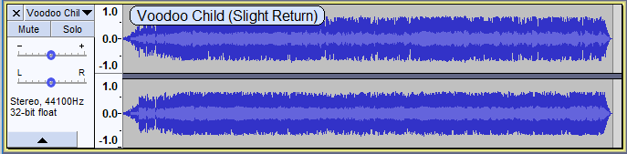
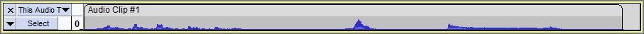
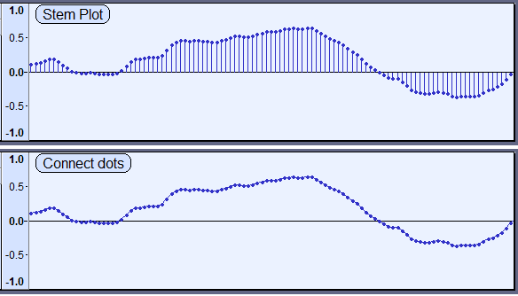

Tracks Preferences
From Audacity Development Manual
- Accessed by: (on a Mac )

- Tracks Preferences.
Display
- Auto-fit track height: Tracks will be automatically resized to fit in the vertical space of the project window if possible. All tracks that have not been collapsed using the Track Collapse Button or Collapse All Tracks menu item are resized so that each separate waveform has the same height. Accordingly mono tracks will have the same height as each other and stereo tracks will have the same height as each other (twice the height of the mono tracks).
- Show audio track name as overlay: When this is enabled the audio track name is displayed superimposed in yellow at top left of all audio tracks. Note that the track name is always shown in the Track Control Panel but will be truncated if the name is too long to fit.
- 
- Use half-wave display when collapsed: With this preference on, collapsing the tracks switches to half-wave view and uncollapsing the tracks switches to full wave view.}
- 
- Auto-scroll if head unpinned: If Pinned Recording/Playback head (see above) is unchecked as per default, this option scrolls the Timeline leftwards during standard play or recording when the playback or recording cursor reaches the right-hand edge of the project.
Most users would keep this setting enabled. Turning it off:
- may prevent interrupted playback or recording on slower computers
- lets you drag the horizontal scrollbar at the bottom of the window to a new position then restart playback from there
- halts Scrubbing and Seeking playback when the playhead reaches either edge of the visible project
- prevents losing sight of a selection edge when making loops
- makes it easier to listen repeatedly from a particular start point without its visible surroundings changing.
This preference may also be turned on and off during playback using the Timeline right-click menu.
- Default view mode: Choose the default view for all newly-created audio tracks. The choices are the same as those available in the Audio Track Dropdown Menu.
- Display samples: This setting changes how Waveform and Waveform dB views are displayed. It only affects the appearance of the waveform when you are so far zoomed in that you can see the individual sample dots. At lower zoom levels it makes no difference.
- Stem plot: This is the default setting which draws a vertical line from the track center line to the sample dot, giving a clearer impression of the relative amplitude of the samples. As seen in the images below, when zoomed out close to the minimum for a stem plot, the horizontal distance between sample dots may be more uneven than seen with the connect dots default. Uneven spacing is due to "aliasing", but zooming in further will equalize the spacing whether choosing Connect dots or Stem plot.
- Connect dots: This is alternative setting yields a waveform where each sample dot is connected to the next sample by a line drawn between them.
- 
- Default audio track name: The default name that Audacity will use for new audio tracks other than imported files. The Audacity default name is "Audio Track".
Zoom Toggle
This setting changes either or both of the two pre-defined zoom levels for the command (shortcut Shift + Z).
- Preset 1: User settable - default is Zoom Default
- Preset 2: User settable - default is 4 Pixels per Sample
You may choose your own presets from those available in the dropdown menus for this option:
| Selectable options | Typical length of audio shown |
|---|---|
| Fit to Width | Same as the command |
| Zoom to Selection | Same as the command |
| Zoom Default (default) | 9 - 20 seconds, same as the command |
| Minutes | 2 hours 30 minutes - 5 hours 40 minutes depending on window size |
| Seconds | 2 minutes 30 seconds - 5 minutes 40 seconds depending on window size |
| 5ths of Seconds | 30 seconds - 1 minute 10 seconds depending on window size |
| 10ths of Seconds | 15 - 35 seconds depending on window size |
| 20ths of Seconds | 7.5 - 17.5 seconds depending on window size |
| 50ths of Seconds | 3 - 7 seconds depending on window size |
| 100ths of Seconds | 1.5 - 3.5 seconds depending on window size |
| 500ths of Seconds | 0.3 - 0.7 seconds depending on window size |
| Milliseconds | 0.15 - 0.35 seconds depending on window size |
| Samples | 0.016 - 0.040 seconds depending on window size |
| 4 Pixels per Sample (default) | 0.004 - 0.010 seconds depending on window size |
| Max Zoom | 5 - 12 individual samples depending on window size |